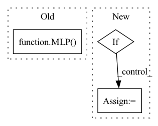

Pattern ID :15795
Before Change
elif type == "MLP":
input_dimension = agents*frame_history*45*45*45
output_dimension = agents*number_actions
self.q_network = MLP( input_dimension, output_dimension, agents)
self.target_network = MLP(input_dimension, output_dimension, agents)
self.q_network.cuda()
self.target_network.cuda()
self.copy_to_target_network()After Change
self.frame_history = frame_history
self.device = torch.device("cuda" if torch.cuda.is_available() else "cpu")
// Create a Q-network, which predicts the q-value for a particular state.
if type == "Network3d":
self.q_network = Network3D(agents, frame_history, number_actions).to(self.device)
self.target_network = Network3D(agents, frame_history, number_actions).to(self.device)
elif type=="Network2d":
self.q_network = Network2D(agents, frame_history, number_actions).to(self.device)
self.target_network = Network2D(agents, frame_history, number_actions).to(self.device)
elif type == "MLP":
input_dimension = agents*frame_history*45*45*45
output_dimension = agents*number_actions
self.q_network = MLP(input_dimension, output_dimension, agents).to(self.device)
self.target_network = MLP(input_dimension, output_dimension, agents).to(self.device)
self.copy_to_target_network()
// Define the optimiser which is used when updating the Q-network. The learning rate determines how big each gradient step is during backpropagation.In pattern: SUPERPATTERN
Frequency: 3
Non-data size: 3
Instances Fragment ID: 53466047
Project Name: gml16/rl-medical
Commit Name: 219d3e97e2168e365496edff8d4d0a197ef49823
Time: 2020-03-05
Author: g.m.leroy@outlook.com
File Name: examples/LandmarkDetection/DQN/DQNModelTorch.py
M Class Name: DQN
N Class Name: DQN
M Method Name: __init__(6)
N Method Name: __init__(6)
M Parent Class:
N Parent Class:
M File Name: examples/LandmarkDetection/DQN/DQNModelTorch.py
N File Name: examples/LandmarkDetection/DQN/DQNModelTorch.py
M Start Line: 103
M End Line: 112
N Start Line: 165
N End Line: 179
Before Change
last_activation=last_activation,
)
if edge_dim > 0:
self.edge_input = MLP(
in_dim=edge_dim,
hidden_size=hidden_dim,
out_dim=hidden_dim,
mid_batch_norm=mid_batch_norm,
last_batch_norm=last_batch_norm,
layers=1,
mid_activation="relu",
dropout=dropout,
last_activation=last_activation,
)
self.mp_layers = nn.ModuleList()
for _ in range(propagation_depth):
self.mp_layers.append(MPNNLayer(in_dim=hidden_dim,
out_dim=int(hidden_dim),After Change
self.in_feat_dropout = nn.Dropout(in_feat_dropout)
self.embedding_h = AtomEncoder(hidden_dim)
if self.edge_feat:
self.embedding_e = BondEncoder(edge_hidden_dim)
self.layers = nn.ModuleList([MPLayer(in_dim=hidden_dim, out_dim=hidden_dim, dropout=dropout,
graph_norm=graph_norm, mid_batch_norm=mid_batch_norm, Fragment ID: 53466044
Project Name: hannesstark/3dinfomax
Commit Name: 7ce60298483a64e8dfea77ad61d4feec18007ac3
Time: 2021-06-24
Author: hannes.staerk@gmail.com
File Name: models/mpnn.py
M Class Name: MPNNGNN
N Class Name: MPNNGNN
M Method Name: __init__(17)
N Method Name: __init__(14)
M Parent Class: nn.Module
N Parent Class: nn.Module
M File Name: models/mpnn.py
N File Name: models/mpnn.py
M Start Line: 66
M End Line: 123
N Start Line: 42
N End Line: 69
Before Change
activation="gelu"
)
self.metapath_encoder = MLP(
input_size=42,
hidden_size=100,
output_size=1,
num_layers=1,
dropout=0.1,
layer_norm=True,
activation=None
)
self.nvec2svec = MLP(
input_size=1,
hidden_size=32,
output_size=1,After Change
pretrained_concept_emb=None, freeze_ent_emb=True,
init_range=0.02, encoder_config=None):
super().__init__()
if encoder_config is None:
encoder_config = {"output_attentions": False}
self.args = args
encoder_config = {"output_attention": False} Fragment ID: 53466042
Project Name: cognlp/cogktr
Commit Name: f6b353c2e6ed535601aa335376fd16f7a2cc5004
Time: 2022-07-15
Author: 1208314139@qq.com
File Name: cogktr/models/safe_model.py
M Class Name: SAFEModel
N Class Name: SAFEModel
M Method Name: __init__(20)
N Method Name: __init__(3)
M Parent Class: nn.Module
N Parent Class: BaseModel
M File Name: cogktr/models/safe_model.py
N File Name: cogktr/models/safe_model.py
M Start Line: 379
M End Line: 414
N Start Line: 283
N End Line: 301